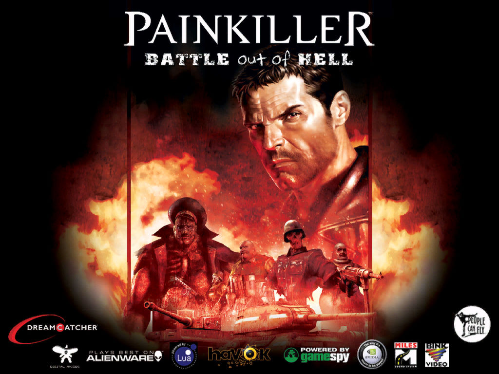
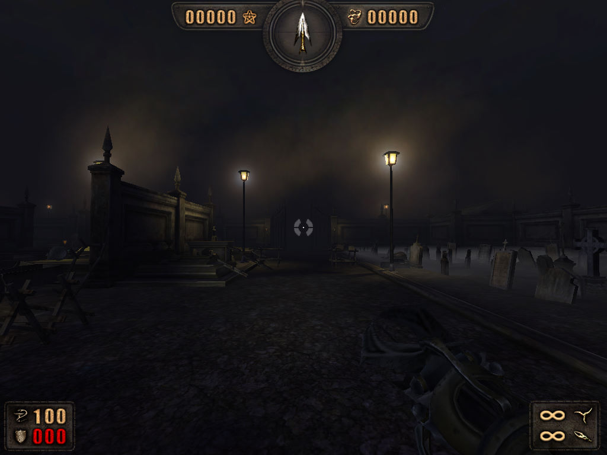

名稱：獵魔者／斬妖除魔 (Painkiller，英文版)
簡介：People Can Fly 2004年出品的第一人稱射擊遊戲，由DreamCatcher代理發行。台灣由
英特衛代理進口，但並未中文化。2004年推出「地獄之戰（Battle Out of Hell）」
資料片。之後由其他不同廠商推出一系列獨立資料片（亦可視為獨立遊戲），如2007
年的「過量（Overdose）」、2009年的「復活（Resurrection）」、2011年的「救贖
（Redemption）」、2012年的「輪迴之惡（Recurring Evil）」等 [待補]。


保護：光碟SafeDisc 3.20+序號（52c5-eef2-e216-1f75），資料片已去除SafeDisc保護。
破解碼（安裝完資料片或更新之後）：
Painkiller.exe, PainEditor.exe
75 0C C6 05
EB -- -- --
備註：VirtualBox無法執行，虛擬機請使用VMware。
備註：建議安裝完資料片後再更新。
檔案：painkiller_patch_161_up.rar = 1.61更新檔（已去除SafeDisc保護）
painkiller_update_1.62.rar = 1.62更新檔（先更新到1.61）
painkiller_patch_1.62_to_1.64.rar = 1.64更新檔（先更新到1.62）
nocd100.rar = 主程式1.00免光碟檔